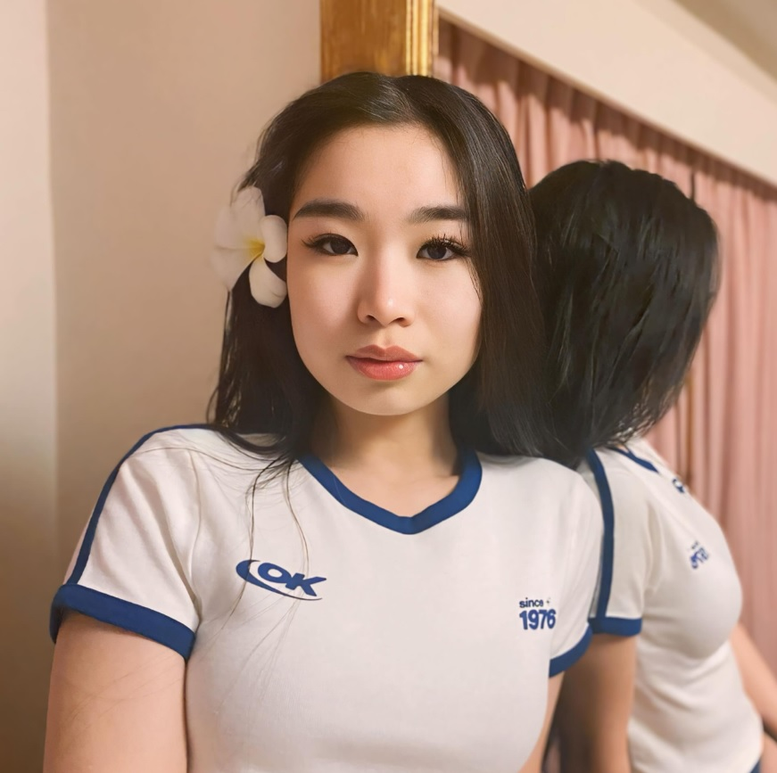
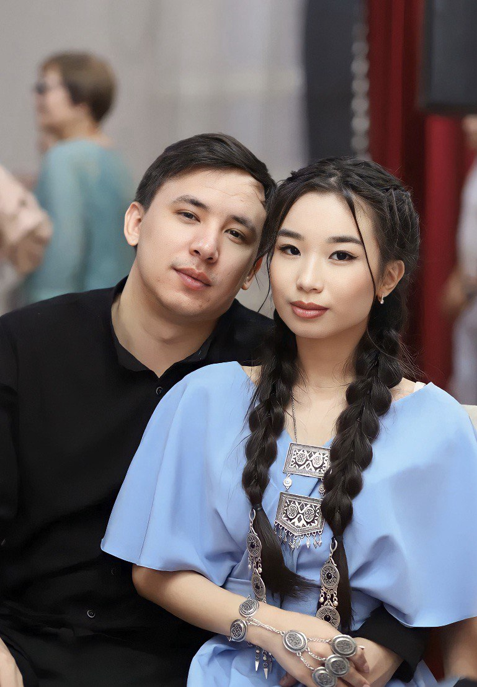
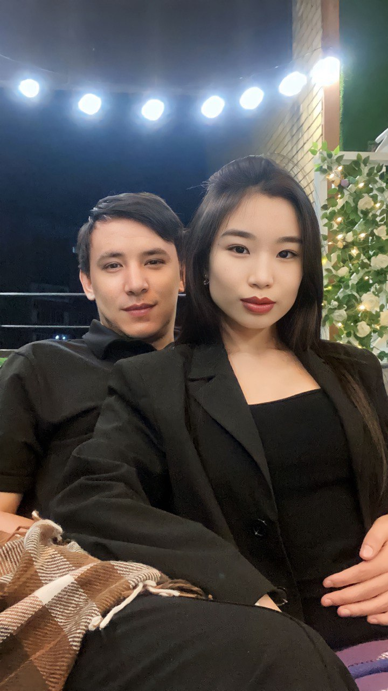
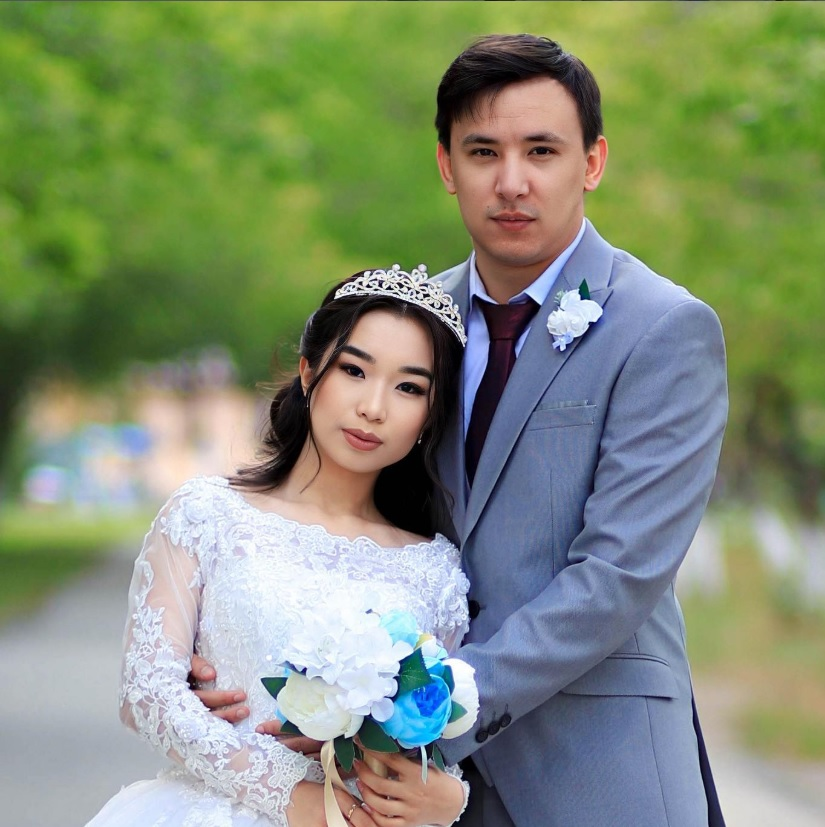
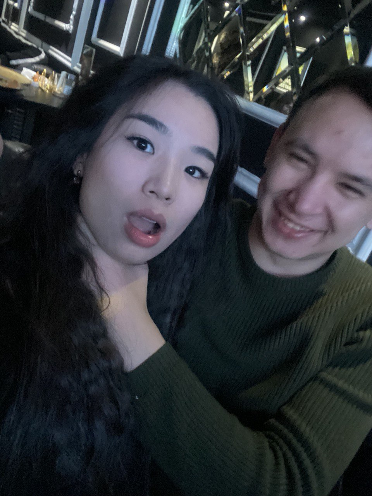
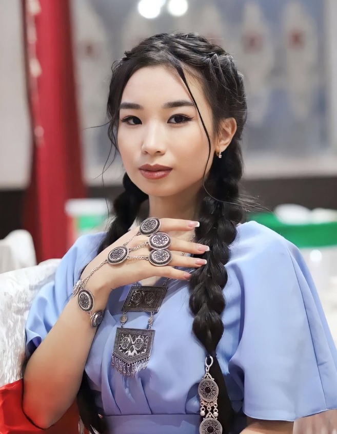

С тобой любой день становится теплее, а любое молчание уютнее.
Ты делаешь мою жизнь красивой не громкими словами, а своим сердцем.
И мне хочется, чтобы рядом со мной ты всегда чувствовала только нежность, спокойствие и любовь.
8 марта 2026
Я сделал это только для тебя, чтобы еще раз сказать, как сильно я тебя люблю.


Самой любимой женщине
Моя самая нежная, красивая и родная
Ты мой самый красивый закат.
Ты мой самый тихий уют.
Все это про тебя. Про твою нежность, твой свет и то спокойное счастье, которое приходит ко мне, когда ты рядом.
Ты делаешь мою жизнь красивой не громкими словами, а своим сердцем.
И мне хочется, чтобы рядом со мной ты всегда чувствовала только нежность, спокойствие и любовь.
Пусть эта песня просто звучит рядом, пока ты смотришь это признание.

Наши моменты
Здесь живут наши теплые воспоминания, самые красивые кадры и то счастье, которое я чувствую рядом с тобой.
Все самое красивое у меня связано с тобой.

Тот самый свадебный кадр, который хочется хранить в сердце всю жизнь.

Навсегда
Пусть эти фотографии всегда напоминают нам, как красиво нам быть рядом.
И мне хочется проживать все это снова и снова.

Здесь все, что мне хочется сказать тебе от сердца.
Жаным, любимая, с 8 Марта тебя.
Спасибо тебе за твою нежность, за тепло, за заботу и за то чувство дома, которое появляется рядом с тобой. Ты умеешь делать мою жизнь красивее не чем-то громким, а своим присутствием, своим голосом и своим сердцем.
Я люблю в тебе все: твою улыбку, твой характер, твой свет и то, как спокойно мне рядом с тобой. Для меня ты самая красивая, самая желанная, самая родная и самая любимая.
Мне хочется, чтобы ты как можно чаще улыбалась, чувствовала себя любимой и ни на секунду не сомневалась, насколько ты для меня важна.
Я очень тебя люблю и хочу, чтобы ты чувствовала это каждый день, а не только сегодня.
Всегда твой муж.
Не только в праздник, а каждый день.